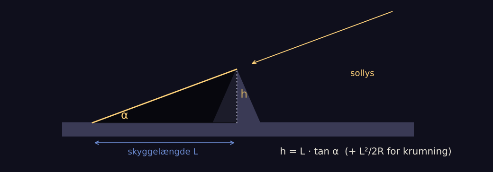
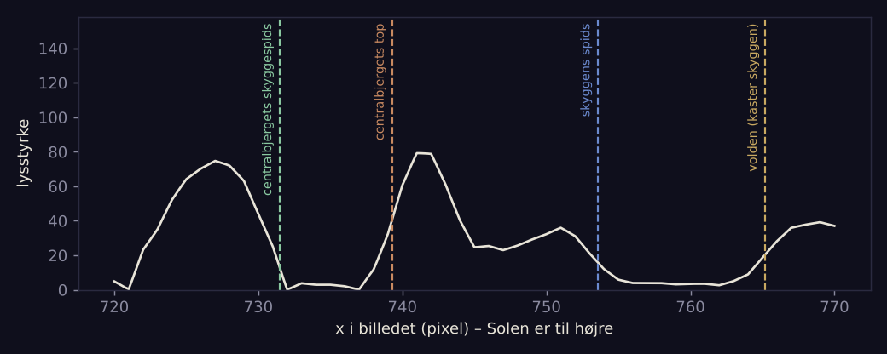
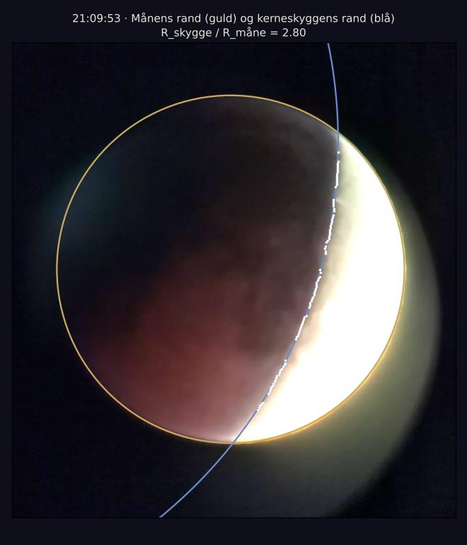
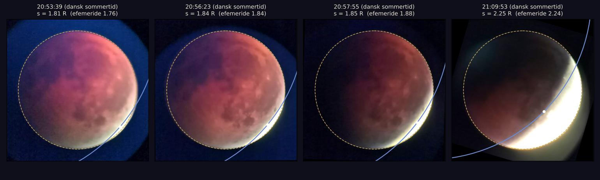
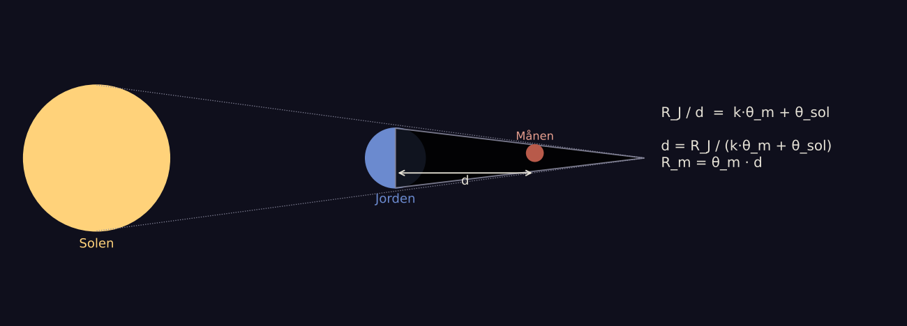
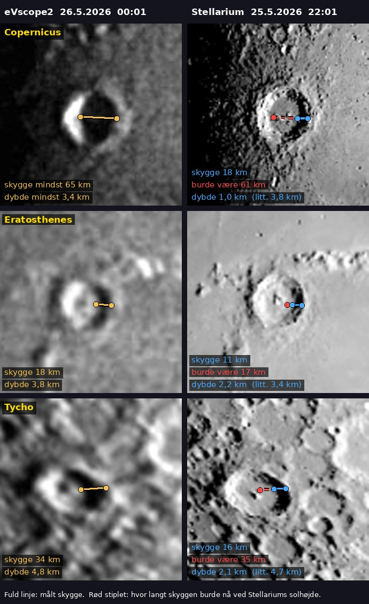
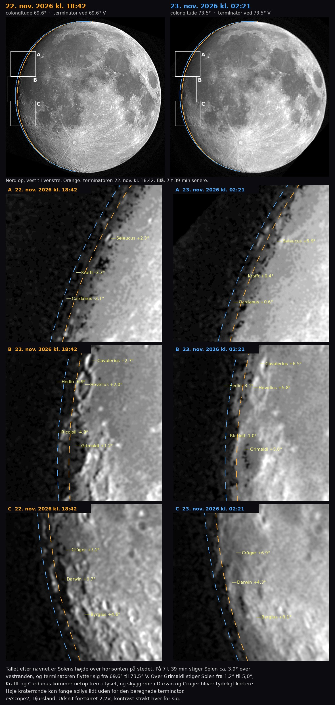

Månen målt med skygger
To gamle metoder brugt på mine egne billeder. Galilei bestemte højden af månebjergene ud fra deres skygger. Aristarch og Hipparch brugte Jordens skygge under en måneformørkelse til at finde Månens størrelse og afstand. Begge dele kan man gøre i dag med et lille teleskop og et kamera, også en mobil holdt op til okularet.
Hent rapporten som PDF1 · Bjerge og kratere
Når Solen står lavt over et sted på Månen, kaster bjerge og kraterrande lange skygger. Kender man skyggens længde L og Solens højde α over horisonten ved skyggens spids, er højden
Ved meget lave solhøjder er skyggerne så lange, at Månens krumning betyder noget, og jeg regner derfor geometrien helt ud i tre dimensioner: sollyset tangerer toppen og rammer overfladen ved skyggens spids. Til første orden giver krumningen et ekstra led L²/(2R), når α er solhøjden ved skyggens spids. Regner man med solhøjden ved bjerget, skal leddet trækkes fra, fordi Solen står L/R højere dér.

Billederne
Jeg har brugt to af mine eVscope2-billeder (indbygget kamera og stacking) med lange skygger nær terminatoren: 26. marts 2026 kl. 18:57 UT (19:57 dansk tid) og 25. maj 2026 kl. 22:01 UT (26. maj kl. 00:01 dansk sommertid). eVscope2 har brændvidde 450 mm og pixels på 2,9 µm, så skalaen er 1,329″ pr. pixel, hvilket svarer til 2,4–2,5 km pr. pixel midt på Månen. Som kontrol har Månen på et råbillede fra 22. november 2026 radius 741,5 pixels, og efemeriden giver 737–741 pixels for den aften.
For hvert billede har jeg fundet Månens centrum og radius fra den lyse rand og drejningen af billedet ud fra 10 kendte kratere. Tilpasningen passer med 2 pixels i middel. Ud fra tidspunktet har jeg beregnet Solens stilling set fra Månen med IAU's rotationsmodel for Månen og en efemeride for Sol og Måne. Det giver Solens colongitude, og dermed solhøjden for hvert eneste punkt.


Sådan måles en skygge
Jeg lægger en linje gennem objektet i Solens retning og aflæser lysstyrken langs den. Skyggen begynder, hvor den belyste skråning slutter, og den ender, hvor lysstyrken er steget halvvejs op til den belyste bund. Begge punkter omregnes til selenografiske koordinater, og højden følger af geometrien.


Resultater
| Objekt | Hvad er målt | Solhøjde ved spidsen | Skygge | Målt højde | Litteratur |
|---|---|---|---|---|---|
| Mons Piton | top over Mare Imbrium | 6,3° | 15,5 km | 1,8 ± 0,4 km | 2,25 km |
| Arzachel | østvold over bunden | 7,4° | 27,5 km | 3,8 ± 0,5 km | dybde 3,6 km |
| Arzachel | centralbjerg | 5,7° | 18,6 km | 2,0 ± 0,4 km | 1,5–2,1 km |
| Alphonsus | østvold over bunden | 7,3° | 19,2 km | 2,6 ± 0,5 km | dybde 2,7 km |
| Alphonsus | centralbjerg | 5,6° | 11,7 km | 1,2 ± 0,3 km | 1,5–2,2 km |
| Archimedes | østvold over bunden | 5,6° | 21,8 km | 2,3 ± 0,4 km | dybde ca. 2,1 km |
| Archimedes | vestvold over mare | 2,9° | 19,1 km | 1,1 ± 0,2 km | – |
| Eratosthenes | østvold over bunden | 11,7° | 17,9 km | 3,8 ± 0,8 km | dybde 3,4 km |
| Tycho | østvold over bunden | 7,5° | 33,6 km | 4,8 ± 0,6 km | dybde 4,7 km |
| Plato | østvold over bunden | 10,4° | 16,2 km | 3,0 ± 0,7 km | 1,0–2,0 km |
| Mons Pico | top over Mare Imbrium | 10,1° | 9,6 km | 1,7 ± 0,7 km | 2,4 km |
| Copernicus | østvold over lysgrænsen på vestvæggen | 1,9° | 65 km | ≥ 3,4 ± 0,2 km | dybde 3,8 km |
Usikkerheden svarer til at flytte hvert endepunkt af skyggen én pixel. Kraterdybderne rammer de publicerede værdier inden for usikkerheden: Arzachel, Alphonsus, Archimedes, Eratosthenes og Tycho. Copernicus kan kun give en nedre grænse, for med Solen kun 1,9° over horisonten ligger hele bunden i skygge, og lyset begynder først oppe på vestvæggen. Til gengæld fanger centralbjergene sollyset midt i det mørke krater.
Andre fejlkilder: billederne er efterbehandlet med skarphedsfilter, som flytter kanter en smule. Tidspunktet er vigtigt: en time forskel flytter solhøjden 0,5° og ændrer højderne med 5–10 %. Tidsstemplerne i eVscope2's billedfiler er i UT. Unistellar-appen viser det samme billede med dansk tid, og billedernes drejning passer med Månens parallaktiske vinkel på UT-tidspunktet. En tidligere udgave af siden regnede tidsstemplerne som dansk tid, hvilket gav 4–8 % for lave højder.
2 · Jordens skygge og Månens afstand
Under den totale måneformørkelse 7. september 2025 fotograferede jeg Månen gennem mit Celestron AstroFi 6 med mobilen holdt op til okularet, lige da Månen var på vej ud af Jordens kerneskygge. Mit eVscope2 kunne ikke bruges den aften, for himlen var for lys til, at det kunne finde stjerner at orientere sig efter. Kanten af skyggen er et stykke af en cirkel, og dens krumning fortæller, hvor stor Jordens skygge er i forhold til Månen.

Skyggens radius målt i månens radier er
Tallet er gennemsnittet af ni tilpasninger med forskellig udglatning og afgrænsning (2,64–2,86). Ren geometri giver 2,70 den aften, og med de 2 %, Jordens atmosfære gør skyggen større (Danjons regel), bliver det 2,75.

Aristarchs og Hipparchs regnestykke
Jordens skygge er en kegle, fordi Solen er større end Jorden. Ved Månens afstand d er keglens vinkelradius Jordens radius set fra Månen minus Solens vinkelradius:

Her er θm Månens vinkelradius og θsol = 0,265° Solens. Månens vinkeldiameter den aften kan aflæses i Stellarium: 32,43′ kl. 21:07, altså θm = 0,2703°. Med RJ = 6371 km giver det d = 361 000 ± 8 000 km. Men den målte k indeholder atmosfærens 2 % (Danjons regel), mens formlen gælder den geometriske skygge. Deler man k med 1,02, bliver resultatet (den sande afstand fra Jordens centrum var ca. 369 600 km; Stellarium angiver 368 478 km, men det er afstanden fra Djursland)
Aristarch kunne ikke måle Månens vinkelstørrelse præcist, men han vidste, at Sol og Måne ser lige store ud. Sætter man θsol = θm, bliver vinklerne helt uden betydning for Månens radius:
Det er Aristarchs og Hipparchs resultat i moderne form: Månen er knap en fjerdedel af Jorden. Med den klassiske vinkelradius 0,25° giver samme regnestykke en afstand på 383 000 km, tæt på middelafstanden 384 400 km. Mine eVscope2-billeder fra andre nætter giver i gennemsnit θm = 0,2657°, men det er ikke godt nok: Månens afstand varierer med ±5 %, og den aften var Månen tæt på perigæum.
Kontrol med Stellarium
Jeg har sammenlignet med skærmbilleder af den samme formørkelse fra planetarieprogrammet Stellarium. Stellarium placerer Jordens skygge rigtigt, men tegner kanten som en blød overgang, der krummer alt for meget. Cirkler tilpasset kanten giver k ≈ 1,0–1,6, så krumningen kan ikke bruges. Kantens position passer derimod. Er s afstanden fra Månens centrum til skyggens centrum, regnet ud fra Månens og Solens koordinater, og x kantens afstand fra Månens centrum, regnet positiv mod den lyse side og negativ mod den mørke, er
| Tid (CEST) | s | x | k |
|---|---|---|---|
| 21:07:44 | 2,17 | +0,56 | 2,74 |
| 21:25:44 | 2,74 | −0,03 | 2,71 |
| 21:45:44 | 3,38 | ca. −0,6 | ca. 2,78 |
Det er en god elevøvelse uden teleskop: aflæs RA og Dec for Månen og Solen i Stellarium, læg 12 timer til Solens RA og skift fortegn på dens Dec for at finde skyggens centrum, og regn vinkelafstanden ud med den sfæriske cosinusrelation. Til skyggehøjderne er Stellarium derimod ikke pålideligt. Stellarium på mobilen tegner bjergenes og kraternes skygger ud fra højdedata, men skyggerne er for korte. Jeg har sammenlignet mit eVscope2-billede fra 26. maj 2026 kl. 00:01 dansk sommertid (25. maj kl. 22:01 UT) med Stellarium sat til 25. maj kl. 22:01 dansk sommertid og målt skyggerne på samme måde. Stellarium-billedet er altså 2 timer ældre end fotoet, men hver skygge er sammenlignet med solhøjden på sit eget tidspunkt. To timer tidligere stod Solen lavere, så Stellariums skygger burde endda have været længere end fotoets:
| Objekt | Stellarium | Mit foto | Litteratur |
|---|---|---|---|
| Copernicus | 1,0 km | ≥ 3,4 km | 3,8 km |
| Eratosthenes | 2,2 km | 3,8 km | 3,4 km |
| Tycho | 2,1 km | 4,8 km | 4,7 km |
| Plato | 0,9 km | 3,0 km | 1,0–2,0 km |
| Mons Pico | 1,5 km | 1,7 km | 2,4 km |
For kraterne med en sikker litteraturværdi giver Stellarium kun 27–66 % af den rigtige højde, i gennemsnit omkring det halve. Kun ved Mons Pico er Stellarium og fotoet enige, og der er begge for lave, fordi skyggen er under fire pixels lang på fotoet. En sandsynlig forklaring er, at Stellarium regner skyggerne ud fra et forudberegnet højdekort i begrænset opløsning, som runder de skarpe kraterrande af. Version 23.1 af Stellarium fik netop en mulighed for at gøre skyggerne på Månen skarpere med supersampling.

Tidspunktet for sammenligningen var givet af mit foto. Den 25. maj stod Månen lidt over første kvarter, og Copernicus, Eratosthenes og Tycho lå nær terminatoren, hvor skyggerne er lange. At himlen er lys en sommeraften, betyder næsten intet, for Månen er langt lysere end tusmørkehimlen. Det, der tæller, er Solens højde ved krateret på Månen, ikke hvor mørkt der er hos os. I Stellarium kan man slå atmosfæren fra (tasten A), så himlen bliver sort, også ved tusmørke. Til undervisningen er efterårs- og vinteraftener alligevel de bedste: Månen ved første kvarter står da højt på en mørk himmel tidligt på aftenen.
3 · Terminatoren vandrer
Terminatoren er grænsen mellem dag og nat på Månen. Den flytter sig ca. 0,5° i selenografisk længde i timen, fordi Månen drejer én gang rundt i forhold til Solen på 29,5 døgn. Det kan man se på to billeder taget med nogle timers mellemrum. Mine to eVscope2-billeder er taget 22. november 2026 kl. 18:42 og 23. november kl. 02:21 dansk tid, 7 t 39 min senere. Månen var da 12 dage gammel, så terminatoren lå helt ude ved vestranden. Colongituden steg fra 69,6° til 73,5°, og terminatoren flyttede sig tilsvarende fra 69,6° til 73,5° vest.
På hele skiven er flytningen kun en smal stribe ved randen, så figuren viser også tre forstørrede udsnit. Tallet efter hvert krater er Solens højde over horisonten lige dér, regnet ud fra Månens og Solens stilling. Krafft og Cardanus går fra nat (−3,3° og −3,1°) til solopgang. Over Grimaldi stiger Solen fra 1,2° til 5,0°, og over Darwin fra 0,7° til 4,3°. Skyggerne bag kraterrandene bliver tydeligt kortere. Høje rande kan fange sollys lidt uden for den beregnede terminator, ligesom bjergtoppe på Jorden er solbeskinnede, før solen står op i dalen.

Det er en god elevøvelse: tag to billeder samme nat, find colongituden for begge tidspunkter i Stellarium eller Virtual Moon Atlas, og se, hvilke kratere der er kommet frem i lyset. Med skyggemetoden fra afsnit 1 kan man også se, at skyggerne bliver kortere, når Solen stiger.
4 · Vær forsigtig med Stellarium
Stellarium er et fremragende program til at finde ud af, hvor og hvornår noget kan ses, og dets koordinater er præcise. Men billedet på skærmen er en tegning, ikke et fotografi, og det skal man huske, når eleverne vil måle på det:
- Skyggerne er for korte. Stellarium tegner Månens skygger ud fra et højdekort i begrænset opløsning. Sammenlignet med mit foto fra 25.–26. maj var skyggerne af Copernicus, Eratosthenes og Tycho i gennemsnit kun omkring halvt så lange, som de skal være (afsnit 2). Højder målt på Stellarium bliver derfor for små.
- Kanten af Jordens skygge krummer forkert. Under formørkelsen ligger skyggekanten det rigtige sted, men den er tegnet som en blød overgang, der krummer alt for meget. Cirkler tilpasset kanten giver k ≈ 1,0–1,6 i stedet for ca. 2,7. Brug kantens position og Stellariums koordinater, ikke kantens krumning.
- Afstanden er fra dit eget sted. Stellarium viser afstanden fra observationsstedet (topocentrisk), ikke fra Jordens centrum. Den aften var forskellen ca. 1 100 km. Formlerne for Aristarchs metode giver afstanden fra Jordens centrum.
- Tjek tid og sted. Stellarium regner med den tidszone og det sted, der er indstillet. En times fejl flytter terminatoren ca. 0,5° og ændrer solhøjden tilsvarende. Tjek også tidsstemplerne på dine egne billeder: eVscope2 gemmer dem i UT, og det opdagede jeg først, da et skærmbillede fra Stellarium kl. 18:42 passede præcis med et foto stemplet 17:42.
- Himlens lysstyrke er simuleret. I tusmørke ser himlen lys og udvasket ud, som den gør i virkeligheden. Slå atmosfæren fra (tasten A), hvis man vil se Månen tydeligt.
- Mobil og computer kan tegne forskelligt. Udgaverne på mobil og computer har ikke altid de samme indstillinger og teksturer. Mine sammenligninger er lavet med Stellarium på mobilen.
Kort sagt: brug Stellarium til tal (koordinater, tidspunkter, vinkelstørrelser, colongitude) og rigtige fotografier til at måle skygger og former.